已有吧友分析过双视角叙述下樱花与雪花的错位，本帖将以另一个角度来推理错位论的可行性——窗前女人与江舟老师妻子是否为同一人。
共两部分叙述内容：
1、窗前神秘女子不是江舟的妻子
2、小兰笑了吗？——江舟闭上的左眼
共两部分叙述内容：
1、窗前神秘女子不是江舟的妻子
2、小兰笑了吗？——江舟闭上的左眼
1、窗前的神秘女子不是江舟妻子
有人看到这种说法会嗤之以鼻：“两人的样子差别那么大，傻子都能看出来吧！”更有甚者敢断言窗前的女人（以下简称神秘女子）就是若狭老师，13年前的浅香。我认为这些想法统统只能算作“猜想”，称不上“推理”。从作者视角来看，工藤优作小说中的虚构人物在柯南漫画中不可能单独存在，一定有其他人物的对应，神秘女子的身份只有两种可能：1、江舟老师的妻子。2、其他主线人物。
在没有理清其身份究竟属于哪一个的情况下，通过二人外貌的不同，草率地断定这个女人是若狭，是不理智的、是不侦探的，是无法探明真相的。毕竟在易容术的加持下，两个相同的阿梓站在面前，柯南尚且需要安室透的远程表白协助来分辨基德，因此在分析窗前女人的身份时，外貌首先应该被排除。那么剩下什么线索呢？
窗户！
没错，江舟妻子在整个樱花班故事中一共出现了15次，除却倒数第二次是江舟老师在脑海中对她的回忆，14次画面从来就没有离开过窗户，江舟妻子出现，窗户就出现。窗户就是神秘女子身份的关键。如果故事最开始的窗户与江舟妻子面前的窗户不同，那么她们就一定不是同一个人。
没错，江舟妻子在整个樱花班故事中一共出现了15次，除却倒数第二次是江舟老师在脑海中对她的回忆，14次画面从来就没有离开过窗户，江舟妻子出现，窗户就出现。窗户就是神秘女子身份的关键。如果故事最开始的窗户与江舟妻子面前的窗户不同，那么她们就一定不是同一个人。
从新一篇结尾妻子弟弟递相机时屋内窗子的格局来看，窗子右边有障碍物，因此窗前人物的右边不可能再有多余的窗帘，那么神秘女子就一定和江舟妻子一样也站在窗户的左侧。
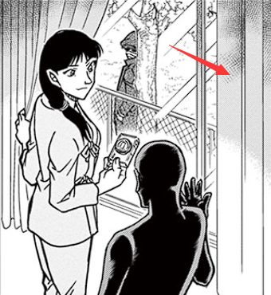
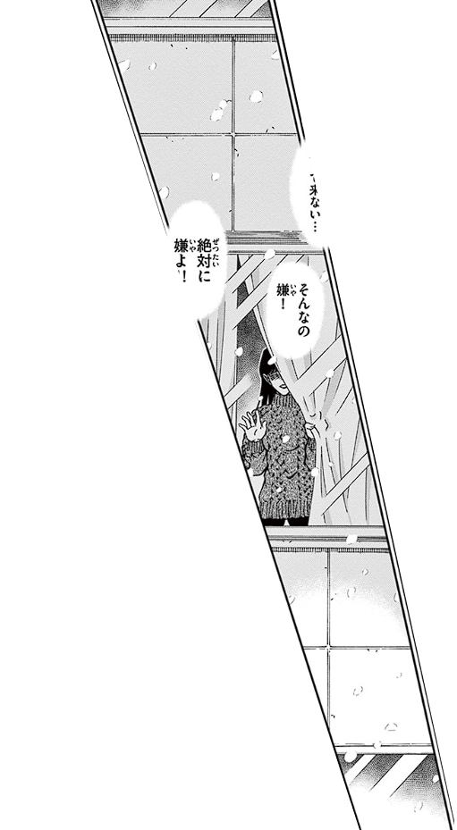
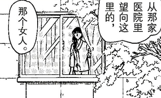
江舟妻子面前的窗户由两个相同窗框组成，窗框前各有一席窗帘，窗户中间窗框重合的地方有一个窗栓。
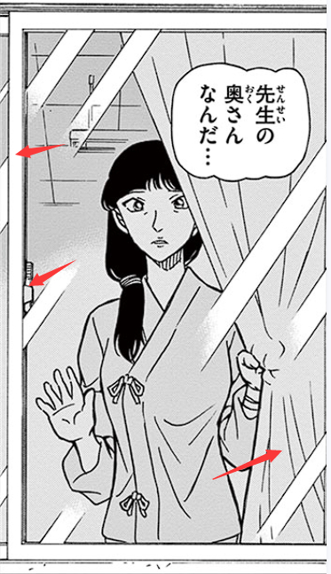
有些朋友看到了漫画所呈现窗户的不同：神秘女子面前窗帘的交合处，窗户的中间没有重合的竖直窗框，自然没有窗栓，且玻璃反光越过中线——那么这两人面前的窗户不同。
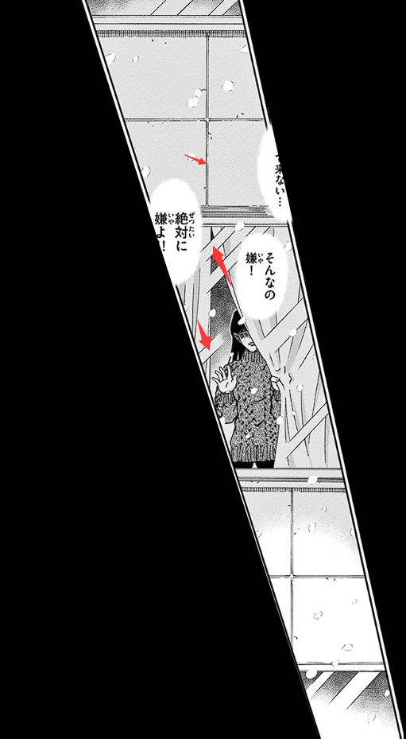
这个推理有可以反驳的余地：如果把两个窗框重合，再左右推动调整其在画面上的位置，是可以呈现出漫画中的效果的——即神秘女子面前的窗户好像一整块玻璃一样。
玻璃的反光、窗帘、窗框、窗栓均不能完全表现出窗户构造的不同，难道没有其他的办法了吗？
有，那就是窗户外面的墙砖。
江舟妻子与面前窗户屡屡出现，窗户周围的墙砖伴随左右。这些墙砖是整齐排列的正方形，窗户长、宽微微多出两列砖的距离，竖直的两列砖以窗户的中线为对称轴左右对称。
江舟妻子与面前窗户屡屡出现，窗户周围的墙砖伴随左右。这些墙砖是整齐排列的正方形，窗户长、宽微微多出两列砖的距离，竖直的两列砖以窗户的中线为对称轴左右对称。
来到神秘女子面前的窗户，作者把四格倾斜的漫画塞进了完整的一页。第二格窗户左上角的墙砖并不是正方形而是长方形。
将画面中竖直的两道砖缝延长，得到这一列墙砖的长；再取左上角墙砖的最短长度，画出其左侧的竖直砖缝。将线补足，这两列砖的形态出现——不可能以窗户的中线左右对称。
将画面中竖直的两道砖缝延长，得到这一列墙砖的长；再取左上角墙砖的最短长度，画出其左侧的竖直砖缝。将线补足，这两列砖的形态出现——不可能以窗户的中线左右对称。
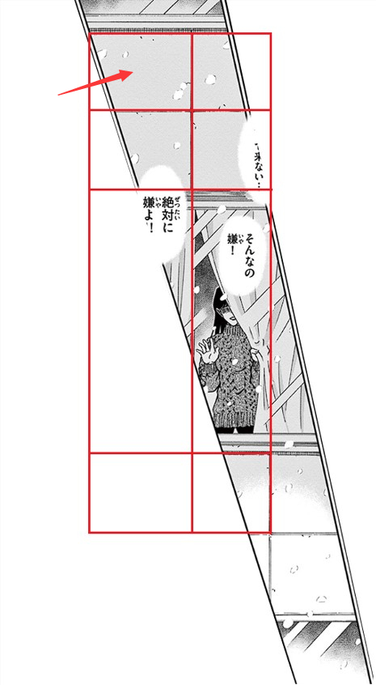
回看小兰和新一的名牌，只有他们的名牌在类似窗户形状的图案上方有一道竖线，是不是作者对于窗户与砖缝的暗示呢？
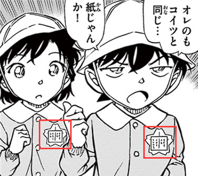
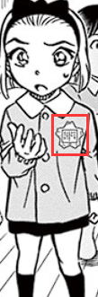
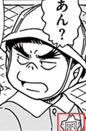
2024-08-04 00:36 | 頔丣萌訣:樱花篇没看过，但我记得毛利兰和新一的是不是都是折的名牌，所以这个有没有可能是折痕呢，或者折明牌在这之后?
至此，我可以斗胆说一句：神秘女子面前的窗户与江舟妻子面前的窗户不是同一扇，神秘女子与江舟妻子一定不是同一个人。
2024-07-22 09:06 | 🌐之徙:非常好的推理
2、小兰笑了吗？——江舟闭上的左眼
樱花班的故事由两部分：
1、小兰与新一初遇，新一救助小兰免除了同学的欺负、老师的绑架，新一看到兰做好名牌时的笑容，喜欢上了兰。
2、江舟老师的妻子因女儿离家精神状态每况愈下，决定绑架小兰作为女儿重新开始生活。新一发现端倪，事件被工藤优作解决。
1、小兰与新一初遇，新一救助小兰免除了同学的欺负、老师的绑架，新一看到兰做好名牌时的笑容，喜欢上了兰。
2、江舟老师的妻子因女儿离家精神状态每况愈下，决定绑架小兰作为女儿重新开始生活。新一发现端倪，事件被工藤优作解决。
因为双视角叙事，使得“毛利兰没有笑，工藤新一看到的是另一个人的笑容”或者“工藤新一将毛利兰的笑容错认为了另一个人”此类的错位存在可能。
对新一来说，“是不是毛利兰的笑？“，这样的疑问是他的错位；对于读者来说，”是不是江舟老师的妻子？“，这样的疑问是作者想要呈现给读者的错位。
对新一来说，“是不是毛利兰的笑？“，这样的疑问是他的错位；对于读者来说，”是不是江舟老师的妻子？“，这样的疑问是作者想要呈现给读者的错位。
这两件事在樱花班事件中一定是统一的，是相关的。
如果不是为了告知读者它们之间的关联性，那么作者为什么要在“樱花班初遇就喜欢”这么美的故事中塞进去对神秘女子错位的判断？为什么要让江舟老师回忆起妻子勾起的嘴唇时闭上自己的左眼？
如果不是为了告知读者它们之间的关联性，那么作者为什么要在“樱花班初遇就喜欢”这么美的故事中塞进去对神秘女子错位的判断？为什么要让江舟老师回忆起妻子勾起的嘴唇时闭上自己的左眼？
我们已知在故事前半部分江舟妻子的形象是不可信的，而最接近她真实面貌的就应该是江舟老师最终的心声吐露，以及上车前对于妻子“想要重新开始”那一幕的回忆——此时，妻子的嘴唇也涂上了口红。如果要对神秘女子与江舟妻子进行对比，最显眼的就是此时的嘴角。神秘女子嘴唇微张、嘴角下沉，不是在微笑；江舟妻子嘴唇微张、嘴角上扬，看似在微笑。
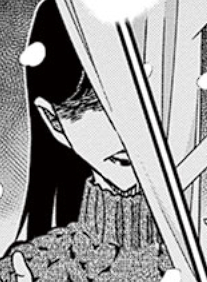
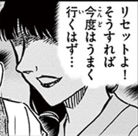
此时妻子的表情源自江舟的记忆，他想起妻子时，左眼紧闭。
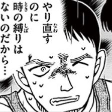
樱花班的故事在柯南篇幅中处于朗姆篇的开头，此时“朗姆候选人”也只出现了黑田一人。纵观朗姆篇，眼睛是非常重要的身份线索。1079话，不像琴酒却被灰原哀看作琴酒的胖子冲过来时，佐藤警官双臂抱前站在众人面前，此时的她紧闭右眼。有吧友分析这一幕是在暗示多年前右眼有问题的若狭保护宫野志保和工藤新一的场景，我认为这种分析思路很好。
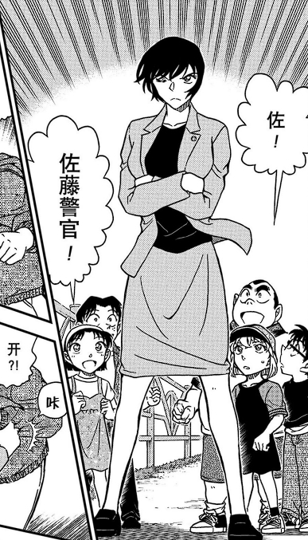
朗姆左眼的能力是什么？记忆，绝对的记忆。
睁开左眼，他就不会忘记，不会忘记许多年前一个路人的举止习惯。
闭上左眼，失忆、错亿就存在了可能。
睁开左眼，他就不会忘记，不会忘记许多年前一个路人的举止习惯。
闭上左眼，失忆、错亿就存在了可能。
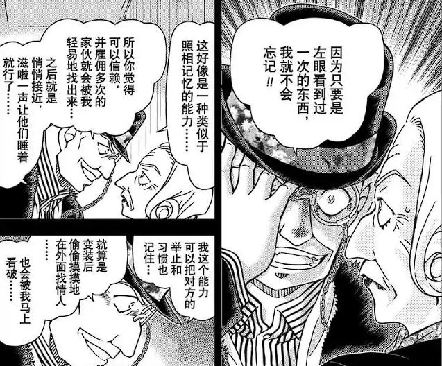
如果江舟的妻子真的如他所说因为女儿的出走患上了重度抑郁症、厌食症，企图自杀，自暴自弃，那么这样一位惨受打击的母亲，为什么会有如此雅兴涂上精致的口红，甚至嘴角上扬，露出笑容？
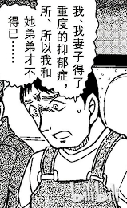
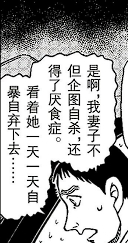
就这样，在“雪化作的”雨的洗礼下，江舟闭上了左眼，回忆起妻子带着笑容的面庞。
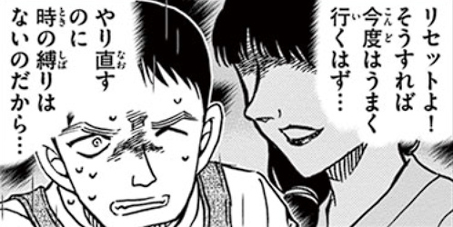
她在笑吗？当她说出“重新开始”这些话时真的在笑吗？
不重要了，无论是江舟的妻子还是小兰，笑与不笑都不重要。
重要的是作者通过这样的设计传达了目前还不能喊出的话：记忆是错乱的，是遗忘的。
工藤新一对毛利兰笑容的错位因此变得合理，乃至于结局非是这个结果不可。
不重要了，无论是江舟的妻子还是小兰，笑与不笑都不重要。
重要的是作者通过这样的设计传达了目前还不能喊出的话：记忆是错乱的，是遗忘的。
工藤新一对毛利兰笑容的错位因此变得合理，乃至于结局非是这个结果不可。
以上就是我对樱花班故事中错位论的推理分析。（完）
砖缝可能是助手作画失误吧
我认为砖缝这个是有道理的，青山的人体可能很差，但透视/建筑上鲜有差错，例如新出案可以完全推理出小兰去桌子对面抱住新出，纽约篇众人“穿过”大楼等等。
并且这个砖缝其实是很显著的，樱花名牌也的确是提示。
不过左眼的部分仍然应该存疑，佐藤那部分有道理是因为佐藤当时不应该闭眼却闭眼了，但江舟那时压力本来就比较大，闭眼可能只是情绪表达，不太能建立坚实的分析。
并且这个砖缝其实是很显著的，樱花名牌也的确是提示。
不过左眼的部分仍然应该存疑，佐藤那部分有道理是因为佐藤当时不应该闭眼却闭眼了，但江舟那时压力本来就比较大，闭眼可能只是情绪表达，不太能建立坚实的分析。
有人说这一篇是为了纪念江舟和前妻的女儿，这是个什么故事呀
2024-07-23 06:26 | 不过期月饼♬:我来科普一下，有个纯猜测的暴论，讲的是青山和前妻有过一个未出生的女儿，隐喻藏在樱花班里，因为江舟年龄和青山同岁，江舟夫妻外貌也像年轻时期青山夫妇，江舟女儿说《死人の消息》台词在说她自己，所以有隐喻的可能。当然，这个纯猜测，没有事实依据的。2024-07-23 06:37 | 頔丣萌訣:回复 不过期月饼♬ :是和高山南吗？还是哪个前妻2024-07-23 07:47 | 不过期月饼♬:还有这种言论哇
回复 頔丣萌訣 :就是和高山南，就当个八卦吧……（笑）
我之所以分析他闭上左眼的原因，一是因为神秘女子与江舟妻子嘴角对比明显，一个笑一个不笑。二是因为江舟的妻子在他的口中和他脑海中对妻子脸庞的回忆是一个矛盾体。
江舟向优作坦白时的关键词是“重度抑郁症、自暴自弃、厌食症、试图自杀”，所塑造的是一个非常消极的形象。
可他回忆起脸呢？“涂口红、露出笑容”，她为什么要涂口红？在这种时刻要和谁约会吗？她为什么还能露出笑容，这难道不是和消极形象相反的有生命力的积极形象吗？
就算没有左眼，这种矛盾也是诡异的。但画面中有“左眼紧闭”这一线索，所以我只能联系朗姆篇中左眼的能力，这样解释了。
@🌐之徙
江舟向优作坦白时的关键词是“重度抑郁症、自暴自弃、厌食症、试图自杀”，所塑造的是一个非常消极的形象。
可他回忆起脸呢？“涂口红、露出笑容”，她为什么要涂口红？在这种时刻要和谁约会吗？她为什么还能露出笑容，这难道不是和消极形象相反的有生命力的积极形象吗？
就算没有左眼，这种矛盾也是诡异的。但画面中有“左眼紧闭”这一线索，所以我只能联系朗姆篇中左眼的能力，这样解释了。
@🌐之徙
2024-07-23 04:47 | 关门开窗🐶:我擦，这是个病句啊，“之所以”之后的“原因”要删掉。2024-08-05 14:55 | 关门开窗🐶:我擦，第一句话不是病句。 因为句尾的“原因”并非是为了呼应句首的“之所以”，而是作为“分析”的宾语存在的。 因此句子的结构是:由“之所以”这个连词来修饰整个句子——“分析闭上左眼的原因”。 而非是我第一次重读时草率地当做了“之所以……的原因”这样的的病句结构。
我觉得窗户不一样高比较石锤
神秘女子画面里窗户很高，像是写字楼或者医院的那种整面墙窗户
江舟妻子的画面。窗户就是普通居民楼的窗户
按照两个女人个头一样算，头上方的高度明显不一样，除去视角原因还是很明显的一个高一个矮。
还有就是樱花和雪花的区别这么看真的很明显
神秘女子画面里窗户很高，像是写字楼或者医院的那种整面墙窗户
江舟妻子的画面。窗户就是普通居民楼的窗户
按照两个女人个头一样算，头上方的高度明显不一样，除去视角原因还是很明显的一个高一个矮。
还有就是樱花和雪花的区别这么看真的很明显
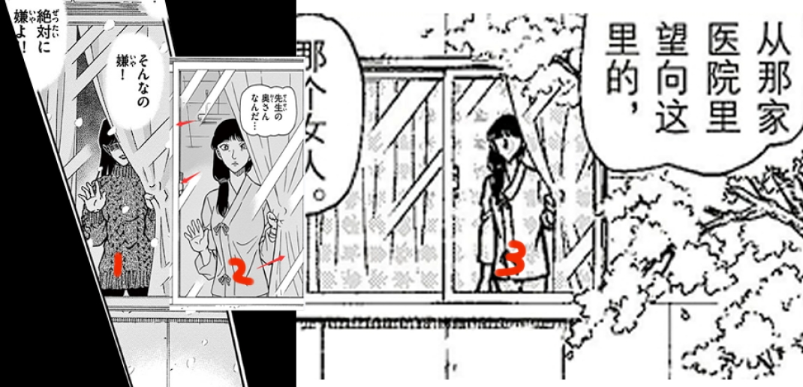
拉到差不多大，发现窗户明显不一样上面的窗也很明显不是那种推拉窗，所以中间的也不是推拉窗。
还有一个点是如果是同一个窗户，画背景的助手完全可以画完图二完整的背景再拷贝放大到图一上再略做修改，这样效率更快且背景准确，稿子是全部画完再交的不用担心前后画的对不上，那么只有一个可能，青山在图一给助手备注这个窗跟后面的窗不是同一个场景，人也不是同一个
还有一个点是如果是同一个窗户，画背景的助手完全可以画完图二完整的背景再拷贝放大到图一上再略做修改，这样效率更快且背景准确，稿子是全部画完再交的不用担心前后画的对不上，那么只有一个可能，青山在图一给助手备注这个窗跟后面的窗不是同一个场景，人也不是同一个
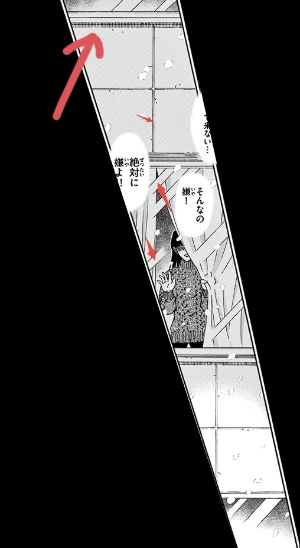
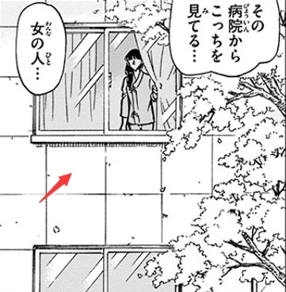
涂口红这个点很重要。有一条常见的生活小知识就是去看病一般最好不要化妆，以免影响医生通过病人的外貌状态来观察体征从而辅助判断病情，尤其是江舟的妻子因为【厌食症】已经是要住院的状态了，这种情况下是不可以化妆的。事实上非主观回忆视角下，明确是江舟妻子的女人确实是没有涂过口红的。涂口红的女性要么是被怀疑身份的那一个，要么是仅存在于江舟回忆中的妻子形象。
妻子的发型设定也是配合了她病人的身份。很多人看到动画漫画角色里女性梳这种发型就会开玩笑说容易悲剧，其实是有理由的：这个发型在动画漫画里确实往往出现在体弱多病的女性角色身上，原因其实很简单：体弱多病自然要常常卧床休息，而这个发型既能束起头发以免散发造成的各种麻烦，而且相比梳在脑后的发型，能让病人躺着或者后脑靠着枕头坐起的时候更舒服，相信梳长发的人都知道将头发束在脑后躺着或者后脑靠着什么的时候都会硌得慌。当然了并不是说梳这个发型就一定是病人，或者病人只梳这个发型，只是说明这是一种常见的表达手法
而江舟的回忆里涂了口红的妻子穿着病号服（看领口）梳着入院卧床休息时的病号常见发型，说明此时江舟想起的是病中的妻子，那么病中的妻子涂口红就是一件非常违反常理的事了。完全可以用以说明江舟的回忆是不可靠的。
不过还有一种微小的可能：日系作品里会倾向于将镜头对准女性涂了鲜红色口红、形状线条清晰、偏丰厚的唇部并且不露出眼睛这一方式来表现女性角色进行“诱骗”和“蛊惑”等有负面意义的行为。江舟回忆中的妻子涂着浓艳的口红、唇形清晰、嘴唇丰厚，且台词内容正是蛊惑江舟作恶。或许这也是给江舟回忆中的妻子画上口红的原因之一。这一手法又刚巧与开头身分不明、涂了口红的女人达成了误导效果，让读者误以为二人是同一角色。
另外从创作者角度说，开头的毛衣口红女人的出现本身就是不合理或者至少是不必要的行为。江舟的妻子是个一次性角色，理论上今后的剧情里都不会再出现她。那么为她设计第二种造型只会混淆这一角色的辨识度和读者对剧情、人物的理解。这种情况下，只能认为这两个形象本来就不是同一个角色。
妻子的发型设定也是配合了她病人的身份。很多人看到动画漫画角色里女性梳这种发型就会开玩笑说容易悲剧，其实是有理由的：这个发型在动画漫画里确实往往出现在体弱多病的女性角色身上，原因其实很简单：体弱多病自然要常常卧床休息，而这个发型既能束起头发以免散发造成的各种麻烦，而且相比梳在脑后的发型，能让病人躺着或者后脑靠着枕头坐起的时候更舒服，相信梳长发的人都知道将头发束在脑后躺着或者后脑靠着什么的时候都会硌得慌。当然了并不是说梳这个发型就一定是病人，或者病人只梳这个发型，只是说明这是一种常见的表达手法
而江舟的回忆里涂了口红的妻子穿着病号服（看领口）梳着入院卧床休息时的病号常见发型，说明此时江舟想起的是病中的妻子，那么病中的妻子涂口红就是一件非常违反常理的事了。完全可以用以说明江舟的回忆是不可靠的。
不过还有一种微小的可能：日系作品里会倾向于将镜头对准女性涂了鲜红色口红、形状线条清晰、偏丰厚的唇部并且不露出眼睛这一方式来表现女性角色进行“诱骗”和“蛊惑”等有负面意义的行为。江舟回忆中的妻子涂着浓艳的口红、唇形清晰、嘴唇丰厚，且台词内容正是蛊惑江舟作恶。或许这也是给江舟回忆中的妻子画上口红的原因之一。这一手法又刚巧与开头身分不明、涂了口红的女人达成了误导效果，让读者误以为二人是同一角色。
另外从创作者角度说，开头的毛衣口红女人的出现本身就是不合理或者至少是不必要的行为。江舟的妻子是个一次性角色，理论上今后的剧情里都不会再出现她。那么为她设计第二种造型只会混淆这一角色的辨识度和读者对剧情、人物的理解。这种情况下，只能认为这两个形象本来就不是同一个角色。
耳朵的画法也差的很多
cy